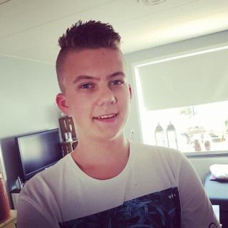

Merel van de Graaf
Ik ben geboren in Waddinxveen maar woon vanaf mijn 4de in Ede. Ik doe de opleiding HBO-ICT op Hogeschool van Arnhem en Nijmegen.
Ik vind het leuk om te programmeren en wil vooral dingen in de praktijk uitvoeren.
Voordat ik HBO deed heb ik Havo Technasium gedaan en hiervoor heb ik mijn diploma behaald.
Naast programmeren vind ik het ook heel leuk om muziek te maken. Zo speel ik een beetje piano en basgitaar. Ook vind ik alles waar je creatief mee kan zijn leuk omdat je zelf iets kan maken wat uniek is.
Ik vind het ook heel erg leuk om te zeilen. Dit doe ik tijdens zeilkampen in friesland of met mijn vrienden op de rijn of ook in friesland. Het leukste aan zeilen is dat je op het water zit en rustig de natuur om je heen in je op kan nemen.
Ik vind het altijd leuk om met mijn vrienden op uitjes te gaan zoals naar pretparken, Amsterdam of naar friesland om te zeilen of met de speedboot te varen.
Brian van der Wiel
Ik ben geboren en getogen in Apeldoorn. Ik doe de opleiding HBO-ICT op Hogeschool van Arnhem en Nijmegen.
Ik vind het leuk om bezig te zijn met computer's, en ik ben graag met auto's bezig.
Voordat ik aan deze opleiding begon heb ik een opleiding MBO ICT-beheer niveau 4 gevolgd welke ik succesvol heb afgerond.

Naast het sleutelen aan computernetwerken, vind ik het ook leuk om bezig te zijn met auto's en elektronica. Onderandere heb ik in mijn auto een start-knop ingebouwd, en probeer ik reparaties zoveel mogelijk zelf uit te voeren zodat ik hier meer over kan leren.
Ik ben ook een actief fan van dingen ondernemen. Thuis zitten doe ik het liefst zo min mogelijk, en daarom ga er graag op uit om een stukje van het land te verkennen. Dit doe ik vaak met vrienden, maar ook wel eens alleen.
Ik ben best vaak te vinden bij mijn vrienden om samen met hun iets te ondernemen. Zo oefen ik ook een beetje met muziek draaien, en sleutel ik wat een beetje aan auto's.
Ik bestel regelmatig wel iets op AliExpress om in te bouwen in mijn auto. Zo heb ik de start-knop al ingebouwd, een telefoonhouder met ondersteuning voor Wireless Charging, en ben ik op dit moment bezig met stoelverwarming.
Samen met een maatje van mij oefen ik ook met muziek draaien en mixxen. Op verschillende feestjes hebben we al eens samen gedraaid, en inmiddels ben ik ook in staat dit zelf te doen. Zo was ik laatst op een huwelijksfeestje de DJ.
Al met al ben ik er in de laatste tijd achter gekomen dat ik naast mijn passie voor ICT nog veel verschillende andere hobbies heb!